10. Application Layer: HTTP and DNS
This chapter covers Part II Lecture 5, Parts I and II (HTTP, then DNS). Chapter 9 showed how TCP and UDP deliver bytes to the right program. This chapter asks what those bytes mean. It follows one web page from the name you type to the page on the screen. The live lectures (Lectures 0, 3.5 and 4.5) are not tested. This chapter uses them only as background, and says so where it does.
The exam asks you to read an HTTP message, say what a status code or a timeout proves, count the round trips (RTT) to load a page, decide whether a cache must contact the server, follow a DNS lookup, work out which address a DNS cache returns after a change, and list every frame a laptop sends and receives before the first page content arrives (ARP, DNS, TCP, HTTP).
The questions sit in drawers after the concept they test. The lecture’s own examples are written as questions. Tutorial 2.3 Q3b is here. No solutions were released for Tutorial 2.3, so its answer is unofficial. Concept checks and extensions are unofficial. Past-year papers are not copied into these notes, but the Exam patterns table says where each pattern appeared.
Quick reference
| Topic | Rule |
|---|---|
| Application protocol | Defines message types, syntax (format), semantics (meaning) and behaviour (who sends what, when). TCP delivers bytes. It does not give them meaning. |
| Ports | HTTP 80, HTTPS 443, DNS 53 (UDP, or TCP for a truncated reply), SMTP 25, IMAP 143, SSH 22, DHCP 67 (server) and 68 (client), both UDP |
| URL | scheme://hostname/path?query. DNS resolves
only the hostname. |
| HTTP request | Request line (method, target, version), header fields, empty line, optional body |
| HTTP response | Status line (version, code, text), header fields, empty line, optional body |
| Status codes | 2xx success. 3xx redirect (301, 302) or reuse your copy (304). 4xx client side (401, 403, 404). 5xx server side (500, 503). Timeout = no HTTP response at all. |
| GET and POST | GET reads (data in the URL). POST sends data in the body. Neither encrypts. HTTPS encrypts. |
| HTTPS | HTTP over TLS over TCP, port 443. TLS encrypts, detects tampering, authenticates the server. |
| Page delay | objects, one at a time. New connection each: RTT. One persistent connection: RTT. |
| Stateless | The server need not remember earlier requests. A cookie (browser) plus a session (server) link them. |
| Cache | Fresh (age < max-age): reuse, no request.
Stale: conditional GET with If-None-Match.
304 = reuse, no body. 200 = new body. |
| HTTP/2 and HTTP/3 | HTTP/2: many streams, one TCP connection, so one lost segment delays all. HTTP/3: streams over QUIC (UDP), so a loss delays only its own stream. |
| DNS | Name to IP address. Device asks its resolver. The resolver asks root, then TLD, then the authoritative server. |
| Resource record | Name, type, data, TTL. A = IPv4, AAAA = IPv6, CNAME = alias, NS = nameserver, MX = mail. |
| TTL | A cache may reuse a record until its TTL runs out. A change reaches every cache within one TTL, and not before. |
| Web request frames | ARP (next hop), DNS query and reply, TCP SYN, SYN+ACK, ACK, HTTP GET, first reply. Ethernet destination = next hop. IP destination = final host. |
1. What the Application Layer Adds
1.1 The problem: right bytes, no meaning
IP gets a packet to the right host. TCP or UDP gets the data to the right program. The bytes then arrive in the program. The program still does not know what they mean.
Example: TCP can deliver the characters MOVE 1. It
cannot say whether 1 is a step, a metre or a speed, or what
reply to send. Two programs must agree on this first. The agreement is
an application protocol. It states four things:
| Part of the agreement | Question it answers |
|---|---|
| Message types | Is this a request, a reply or an error? |
| Syntax | Where are the operation, the resource and the data written? |
| Semantics | What does each field or operation mean? |
| Behaviour | When is a message sent, and what happens next? |
The web uses these terms: the network application is the World Wide Web, the application processes are a browser and a web server, and the application protocol is HTTP. Two different programs can talk if both follow the same protocol.
The lecture’s teaching protocol is a score service. The client sends
SCORE ROBOTS plus a newline. The server replies
RESULT 3. The newline marks the end of a message, and one
request gets one result or one error. TCP carries these bytes but
defines none of the rules.
Encapsulation puts the application’s bytes inside
the lower layers. The client writes SCORE ROBOTS to a TCP
socket. TCP adds its header. IP adds its header. Ethernet adds its
header and trailer. The receiver unpacks each layer in turn, and the
application reads the bytes using its own rules.
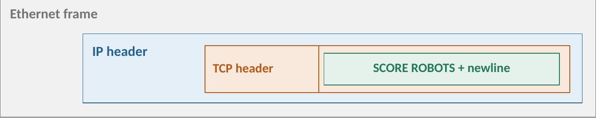
The OSI model has three upper layers (application, presentation, session). The Internet model groups them into one application layer. The functions are still needed. Only the grouping differs.
1.2 Who talks to whom
| Architecture | Rule | Example |
|---|---|---|
| Client-server | Clients start requests. Server processes supply the service. | Browser and web server |
| Peer-to-peer (P2P) | Every participant both requests and supplies data. | BitTorrent: peers swap file pieces. A separate service may still help peers find each other. |
One machine can play both roles. A web server can be a client of a database service.
1.3 Sockets, ports and the transport choice
A socket is the endpoint through which a program
uses a transport service. IP addresses and ports name the two endpoints.
Example: the browser’s socket is 192.0.2.10:51000, and the
web server’s socket is 198.51.100.80:80. The server uses
the well-known port. The browser’s operating system picks the temporary
port (Chapter 9, section 2).
A TCP server needs two kinds of socket. The OS performs the handshake. No call is itself a TCP packet.
| Call | Meaning |
|---|---|
Server: bind(address, port) |
Attach the socket to the server’s address and service port. |
Server: listen() |
Make it a listening socket that waits for clients. |
Client: connect(server) |
Ask the OS to set up a TCP connection. |
Server: accept() |
Return a new connected socket for this one client. The listening socket stays free for the next client. |
send / recv (TCP) |
Write bytes. Read bytes. A recv can return only
part of a message. |
sendto / recvfrom (UDP) |
Send or receive one whole datagram. No handshake. A
successful sendto does not mean delivery. |
Which transport does the application need?
| Application need | Transport |
|---|---|
| Correct, ordered contents (a file, a web page, email) | TCP |
| Fresh data matters more than complete data (a game position, a voice call) | UDP. The application chooses its own recovery. |
| Messages kept separate | UDP keeps datagram boundaries. Over TCP, the application must mark the boundaries. |
1.4 Delivered is not understood (from Live Lecture 4.5, background)
- A TCP ACK is not an application reply. The ACK says the bytes reached the receiver’s TCP buffer. The application may not have read them yet, and a disk-full error can still follow. So the upload protocol needs its own reply (“Saved” or “Storage error”). TCP carries that reply as ordinary data in the other direction.
- TCP has no message boundaries. One
sendneed not match onerecv. The application marks the end of a message: a length field first (“Length: 5000, then 5000 bytes”), a fixed size, or a delimiter such as the newline above. - End of the file is not end of the connection. The application’s own framing marks the end of the file. A FIN only means “I send no more bytes”. The other side may still reply (a half-close, Chapter 9, section 6).
The server’s TCP sends an ACK for all the upload bytes, so the file is saved.
False. The ACK only says the bytes reached the receiver’s TCP buffer. The server program may not have read them, and the save can still fail. The upload protocol must send its own reply.
One send of 5000 bytes at the client is always one
recv of 5000 bytes at the server.
False. TCP is a byte stream. It keeps the order but
not the write boundaries. A recv can return part of the
5000 bytes, so the server keeps reading until the agreed length has
arrived.
2. HTTP: Asking for a Web Resource
2.1 Resources, objects and URLs
HTTP (Hypertext Transfer Protocol) is a request-response protocol. The client sends a request. The server sends one response. A resource is the thing requested (a page, a score). A representation is data about it that comes back (an HTML document, or JSON for a web API).
One displayed page needs several objects. The
browser first gets the HTML file. It reads the HTML, finds the other
objects (a style sheet site.css, an image
team.png), and requests each one. So one page means several
request-response exchanges. The browser learns the image URLs only after
it has the HTML.
A URL names a resource:
| Part | In https://www.example.com/scores?team=robots |
Purpose |
|---|---|---|
| Scheme | https |
HTTP with encryption and authentication |
| Hostname | www.example.com |
The name that DNS resolves to an address |
| Path | /scores |
The resource on that server |
| Query | team=robots |
A parameter given to that resource |
DNS resolves only the hostname. The path and query go to the server inside the HTTP request.
2.2 The request
HTTP/1.1 messages are text. A request has a request line, header fields, an empty line, and an optional body.
GET /scores?team=robots HTTP/1.1
Host: www.example.com
Accept: application/json
GETis the method: read the resource./scores?team=robotsis the target.HTTP/1.1is the version.Hostnames the website. It lets one server (one IP address) host many sites.Acceptlists the formats the client prefers.- The empty line ends the headers. This request has no body.
A POST carries data in the body:
POST /join HTTP/1.1
Host: www.example.com
Content-Type: application/x-www-form-urlencoded
Content-Length: 8
name=MeiContent-Type gives the body’s format.
Content-Length: 8 gives its size in bytes
(name=Mei is 8 bytes).
| GET | POST | |
|---|---|---|
| Purpose | Read a representation | Ask the server to process the data |
| Where the form data goes | In the URL (/scores?team=robots) |
In the body |
| Side effects | None intended | May change server state. Repeating may submit twice. |
| Privacy | The URL can appear in history and logs | The body stays out of the URL, but may still be logged |
| Encryption | Neither one encrypts. HTTPS protects both. |
Use POST for password forms and changes, with HTTPS.
2.3 The response and the status code
HTTP/1.1 200 OK
Content-Type: application/json
Content-Length: 11
{"score":3}The status line holds the version, the code and a reason. The headers
describe the body. Content-Type says what
the body is (text/html, image/png,
application/json). Content-Length says
how many bytes it has ({"score":3} is 11
bytes).
| Code | Meaning |
|---|---|
| 200 OK | Success |
| 301, 302 | Redirect: ask another URL |
| 304 Not Modified | Your cached copy is still good. No body follows. |
| 401, 403, 404 | Login needed, access refused, not found |
| 500, 503 | Server error, service unavailable |
A status code is an HTTP-level result. A timeout is different: no HTTP response came at all, so the cause is unknown (connection, filter, server). Do not call a timeout a 404.
2.4 Where does a message end?
TCP gives one stream of bytes. HTTP/1.1 supplies the boundaries:
Content-Length gives the body size (the headers end at the
empty line). Other cases exist: chunked transfer sends
the length of each chunk, and some responses (such as 304) have no body.
An HTTP message and a TCP segment are different units. One body can span
several segments.
2.5 HTTPS
HTTPS is HTTP over a protected connection. TLS (Transport Layer Security) sits between HTTP and TCP. It encrypts the messages, detects tampering and normally authenticates the server. The stack is HTTP, TLS, TCP, IP. HTTPS uses TCP port 443. A server’s HTTP and HTTPS ports are different, so the browser picks the port from the scheme.
Example Question (lecture): one page, three different outcomes. A browser loads the club page. Its requests give these results:
| Resource | Observed result |
|---|---|
/index.html |
200 OK, with an HTML body |
/team-photo.png |
404 Not Found |
/api/scores |
Timeout, with no HTTP response |
- What does the 404 establish? (b) What does the timeout establish? (c) Would POST fix the timeout or encrypt the request?
Answer
The server answered, and said it has no such resource at that path. Check the requested path and the server’s configuration. A 404 is an application-level result, so the connection works.
Nothing, except that no HTTP response arrived before the timer ran out. The cause is still unknown. Check the connection, any filtering, and the service itself.
No. POST only changes the request’s meaning. It does not repair a connection and does not encrypt. HTTPS protects HTTP in transit.
A POST request is encrypted, so a password form is safe without HTTPS.
False. POST puts the data in the body, out of the URL, but it is still plain text on the wire. Only HTTPS encrypts it.
A 404 response means the web server is down.
False. A 404 is an HTTP response, so the server is up and answering. It says that one resource was not found. A server that is down gives a timeout or a connection error, not an HTTP status.
3. Connections and State
3.1 How many TCP connections?
HTTP needs a TCP connection (Chapter 9, section 6). The question is how many to open.
- Non-persistent HTTP: a new TCP connection for each request-response exchange. Close it after the response.
- Persistent HTTP: reuse one TCP connection for several exchanges. HTTP/1.1 does this by default.
3.2 Counting round trips
The round-trip time (RTT) is the time for a small packet to go to the server and back. The lecture’s model ignores DNS, TLS, processing, loss and the time to transmit an object, and allows no pipelining or parallel connections. Under this model:
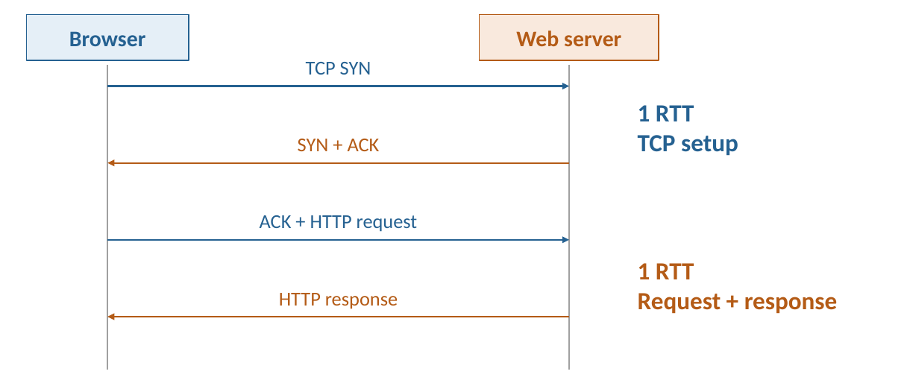
- The SYN and SYN+ACK take 1 RTT. The last ACK of the handshake carries the HTTP request, so it adds no extra RTT.
- The request and its response take 1 RTT.
So a small object on a new connection costs about 2 RTT.
Example Question (lecture): a page and two images. One HTML document refers to two images on the same server. RTT = 40 ms. The browser learns the image URLs only after it receives the HTML. Fetch all three objects one at a time. No content or connection is cached. Compare a new TCP connection per object with one persistent connection. How many RTT, and how many milliseconds, does each need? Ignore DNS, TLS, processing, loss and object transmission time. No pipelining or parallelism.
Answer
| Arrangement | RTT calculation | Delay |
|---|---|---|
| New connection per object | 3 × (1 setup + 1 exchange) = 6 RTT | 6 × 40 = 240 ms |
| One persistent connection | 1 setup + 3 exchanges = 4 RTT | 4 × 40 = 160 ms |
Saving = 2 RTT = 80 ms. It comes from skipping two TCP handshakes.
Check: the saving is RTT with objects, so 2 RTT. ✓
General method: delay of a page, objects, one at a time
- Count the objects : the HTML file plus every object it names.
- Non-persistent: RTT. Persistent: RTT. The saving is RTT.
- Multiply by the RTT.
- If the question gives a DNS lookup time, add it once, before the first TCP setup. If it gives the transmission time of each object, add that to each exchange.
- The objects after the HTML can start only when the HTML has arrived, because the browser reads the URLs from it.
Extension 3.1. A page has one HTML file and five images, all on one server. RTT = 50 ms. Compare non-persistent and persistent HTTP, one object at a time. Ignore everything the lecture ignores.
Answer (Extension 3.1)
objects.
- Non-persistent: RTT = 12 × 50 = 600 ms.
- Persistent: RTT = 7 × 50 = 350 ms.
- Saving: RTT = 250 ms. ✓
Extension 3.2 (not in the lecture). Same page as Extension 3.1, but now the browser may open parallel connections. Many textbooks (for example Kurose and Ross) count parallelism and pipelining like this. The lecture rules both out for its examples, so use this only if a question allows them. Give the RTT count for (a) non-persistent HTTP with the five images fetched on five parallel connections, and (b) persistent HTTP with the five image requests pipelined (sent back to back, without waiting for each reply).
Answer (Extension 3.2)
The HTML file needs 2 RTT (setup and exchange). The five images then run at the same time, each on its own connection, so together they need 2 RTT. Total 4 RTT = 200 ms.
1 RTT for setup, 1 RTT for the HTML file, and 1 RTT for all five images (the requests leave back to back and the replies come back together). Total 3 RTT = 150 ms.
The images can start only after the HTML has arrived, so the HTML always costs its own round trip.
3.3 Remembering a user: cookies and sessions
HTTP is stateless: the protocol does not require the server to remember earlier requests. A login must still work across many requests. A website adds a mechanism:
- A cookie is data that the browser stores and sends back with matching requests.
- A session is state that the server keeps for one continuing interaction (here, one logged-in user).
The cookie carries only an identifier. The server uses it to find the session.
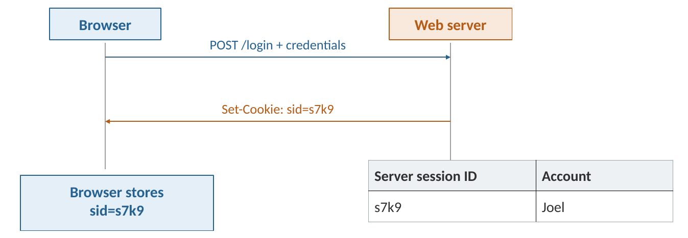
- The browser sends
POST /loginwith the credentials. - The server creates a session record (
s7k9belongs to Joel). It replies with the headerSet-Cookie: sid=s7k9. - The browser stores the cookie. On every later request it sends
Cookie: sid=s7k9. - The server looks up
s7k9, finds Joel’s session, checks access, and replies (for exampleGET /accountgets200 OKand the account page).
Two mechanisms, two jobs: cookie plus session remembers the user. Persistent connection reuses the TCP connection. Neither one needs the other.
HTTP is stateless, so every request must open a new TCP connection.
False. “Stateless” is about what the server remembers. Connection reuse is about TCP. HTTP/1.1 keeps one TCP connection for many requests, and the server still does not have to remember the user.
The cookie stores the user’s account details, so the server needs no session.
False in the lecture’s model. The cookie carries an
identifier (sid=s7k9). The account details
sit in the server’s session record, and the server uses the identifier
to find them.
4. Caching and Modern HTTP
4.1 Freshness: may I reuse my copy?
An HTTP cache stores responses for reuse. A hit saves a transfer, and sometimes a whole round trip. The risk: the server may have changed the content. Two questions follow.
A response is fresh while its age is below its freshness lifetime. A fresh response is reused with no request at all. After the lifetime it is stale: check before reuse. Stale does not mean the content changed.
Cache-Control: max-age=60 gives a 60-second lifetime.
Stored at 0 s, the copy is fresh at 20 s, expires at 60 s, and is stale
at 70 s. The lecture assumes age 0 at storage, no other directives, and
no permission to serve stale content.
4.2 Validation: is my stale copy still current?
The server also sends an ETag, an identifier for one version of the content. To check a stale copy, the browser sends a conditional GET:
GET /team.png HTTP/1.1
If-None-Match: "v1"- Unchanged: the server replies
304 Not Modifiedwith no body. The browser reuses its stored copy. - Changed: the server replies
200 OKwith the new body and a new ETag.
Fresh reuse saves an exchange. Validation can save a body transfer.
Example Question (lecture): which response needs the image
body? At t = 0, the browser stores /logo.png with
max-age=60 and ETag "logo-v1". Assume no
forced refresh, no other cache restrictions and negligible age at t =
0.
| Later request | Question |
|---|---|
| t = 20 s; same resource | Does the browser need an HTTP request? |
t = 70 s; still logo-v1 |
What request and response can validate the cache? |
Alternative at t = 70 s: logo-v2 |
What must the server send instead? |
Answer
| Case | Network work | Image body sent? |
|---|---|---|
| 20 s, fresh (20 < 60) | No HTTP request. Use the stored copy. | No |
| 70 s, stale, unchanged | Conditional GET with If-None-Match: "logo-v1", then
304 |
No |
| 70 s, stale, changed | Conditional GET, then 200 with the new image and
ETag "logo-v2" |
Yes, the new one |
General method: what does a browser do on a repeated request?
- Is the stored copy fresh? (age < max-age) Yes: no request.
- No: send a conditional GET with the stored ETag.
- The server compares versions. Same: 304, no body. Different: 200, new body.
Extension 4.1 (not in the lecture). In the example
above, the 304 arrives at t = 70 s. The browser needs
/logo.png again at t = 100 s. Does it send a request?
Answer (Extension 4.1)
No. Standard HTTP caching (RFC 9111) says a 304 refreshes the stored response, so its freshness lifetime starts again at 70 s. At 100 s its age is 30 s, which is below 60 s. The copy is fresh, so no request is sent. The lecture does not discuss this case.
4.3 Where can copies be stored?
- A browser cache sits at the client.
- A proxy is an intermediary in the HTTP exchange. A forward proxy acts for clients. A reverse proxy sits in front of the origin server, the service responsible for the resource.
- A content delivery network (CDN) is a set of distributed servers that cache reusable content near users. A request to a nearby edge server that holds a copy (a cache hit) never reaches the origin. The cache policy decides what the edge may reuse. For HTTPS, the edge is an authorised endpoint of the encrypted connection.
4.4 HTTP/2 and HTTP/3
What about the resources that still need transferring? Example: a visitor needs a large photograph and a small live score, and neither is cached. On one HTTP/1.1 connection, used one exchange at a time, the score waits for the photograph. (Browsers also open several connections to get round this.)
- HTTP/2 divides messages into labelled frames and sends frames of different streams one after another on one TCP connection. One stream carries one request-response exchange. This is multiplexing. An HTTP/2 frame is not an Ethernet frame or a TCP segment.
- The limit: TCP delivers one ordered byte stream. If one TCP segment is lost, later bytes of every stream wait behind the gap (head-of-line blocking, Chapter 9, section 7).
- HTTP/3 runs the same request-response ideas over QUIC, a secure transport built on UDP. QUIC keeps separate ordering for each stream. A loss in stream A holds up only stream A. Stream B delivers at once. Streams still share congestion control.
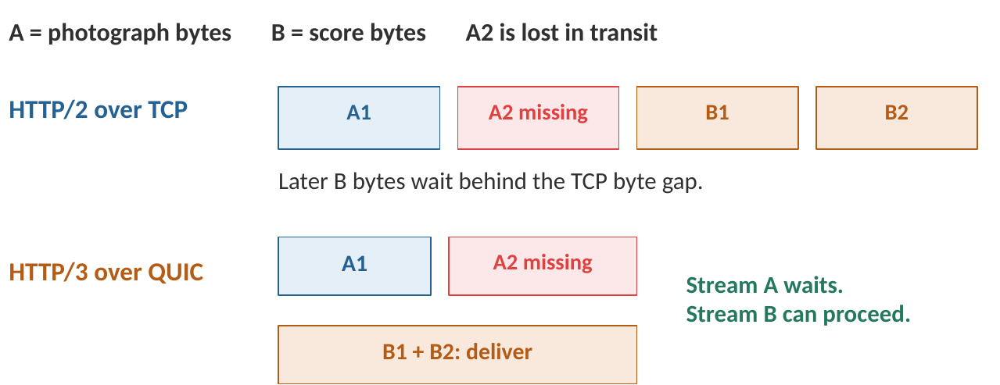
| Version | How it carries concurrent work |
|---|---|
| HTTP/1.1 | Persistent TCP connections. Browsers often use several. |
| HTTP/2 | Many streams share one TCP connection. A TCP gap delays them all. |
| HTTP/3 | Many QUIC streams over UDP. Ordering is separate per stream. |
Methods, status codes and headers mean the same in all three.
Why QUIC exists (Live Lecture 4.5, not tested, background only). TCP has costs for the modern web. QUIC answers each one:
| TCP’s cost | QUIC’s answer |
|---|---|
| One lost segment stalls unrelated files | Separate streams |
| TCP handshake, then TLS handshake (about 2 RTT before the first request) | Transport and TLS 1.3 setup combined (about 1 RTT) |
| A new IP address (Wi-Fi to mobile data) breaks the connection, because TCP names a connection by both addresses and both ports | A connection ID identifies the connection on the new address |
| TCP is built into the OS and read by middleboxes, so it is very hard to change | QUIC runs inside the application over UDP, with its details encrypted |
QUIC must still rebuild reliability, flow control and congestion control above UDP.
HTTP/2 over TCP lets the score stream finish while the photograph stream waits for a lost segment.
False. HTTP/2 puts all streams into one TCP byte stream. TCP holds back every byte after the gap, including the score’s bytes. HTTP/3 over QUIC lets the score stream go ahead.
5. DNS: Names to Addresses
5.1 The problem and the people in a lookup
People type names. Packets need IP addresses. DNS (Domain Name System) turns a name into an address. It can also store other facts about a name, such as where its email goes.
One giant table would fail for three reasons: too many names (hundreds of millions), too many owners (each organisation must change its own entries, and only its own), and too many questions (billions of lookups a day). So DNS is split up. Each owner keeps the entries for its own names, and signposts say where each part is kept.
| Who | Job |
|---|---|
| Your device | Asks the question. It asks only the resolver. |
| Resolver (recursive resolver) | The DNS helper that your network gives you (campus, ISP, home router, or a public one such as 8.8.8.8). Its address usually arrives by DHCP, or you set it by hand. It does the legwork, asks everyone else, and remembers answers. |
| Root and TLD servers | Signposts. They do not know the final address. They
reply with a referral: where to ask next. A
TLD is a top-level domain such as .com or
.sg. |
| Authoritative nameserver | Holds the owner’s official records. Its answer comes from the source, not from a stored copy. |
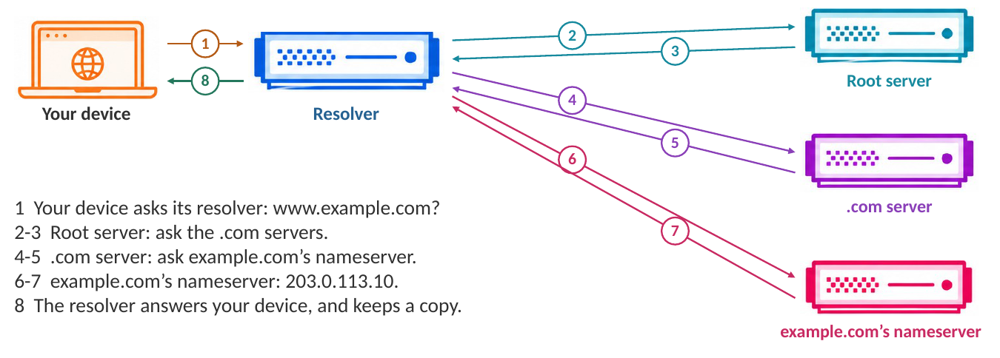
A cache is a stored copy of a recent answer, so the same question need not be asked again. TTL (Time To Live) says how many seconds a copy may be reused. The owner of the name sets it. Your browser, your computer and the resolver can each keep their own cached copy.
5.2 Names and records
A domain name is a sequence of
labels separated by dots. Read the hierarchy
from right to left: www.example.com. is
the name www inside example, inside the TLD
com, inside the root .. The complete name
through the root is the fully qualified domain name
(FQDN). The final dot is usually left out when typing.
www is only a convention. DNS uses the hostname. HTTP uses
the path, such as /team.html.
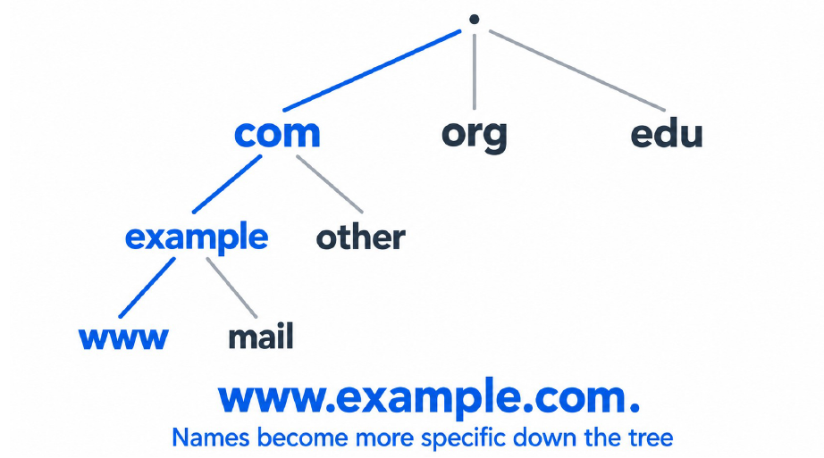
DNS stores resource records (RR). A record has four parts:
| Name | Type | Data | TTL |
|---|---|---|---|
www.example.com |
A | 203.0.113.10 |
300 s |
The type tells the client how to read the data. A query gives a name and a type. The same name can have several records.
| Type | Data | Question it answers |
|---|---|---|
| A | IPv4 address | Which IPv4 endpoint can I contact? |
| AAAA | IPv6 address | Which IPv6 endpoint can I contact? |
| CNAME | Canonical (real) name | Which other name should resolution follow? |
| NS | Nameserver name | Which servers are authoritative? |
| MX | Preference plus mail server name | Where should mail for this domain go? |
A CNAME is an alias. Example:
www.example.com CNAME site.example.net, and
site.example.net A 203.0.113.10. The resolver follows the
alias and returns the address. The browser’s URL and the HTTP
Host stay www.example.com. This is
not an HTTP redirect, where the web server tells the
browser to request a different URL.
DNS resolves an IP address to a MAC address.
False. DNS turns a name into an IP address. ARP turns an IP address into a MAC address on the local link. (AY25/26 S2 Q1(13) used this statement.)
5.3 Publishing a name
Before anyone can look up www.example.com, its owner
must put the right entries in the right places. Three steps:
| Step | What happens |
|---|---|
| Register | Buy the name from a registrar. The registrar records it with the
registry that runs .com. |
| Delegate | Tell the registrar which nameservers answer for the name. The
.com servers then point visitors there. |
| Publish | Add the records (for example
www.example.com A 203.0.113.10) on those nameservers. |
Three roles buy and hold a name:
| Role | Job |
|---|---|
| Registrant | Owns the name and pays to keep it (the student team) |
| Registrar | Sells names and holds the owner’s settings for the name (a shop, for example Namecheap) |
| Registry | Keeps the official list of every name in its TLD and runs the TLD’s
nameservers (Verisign for .com, SGNIC for
.sg) |
The website owner needs three services. One company may supply several: a registrar, DNS hosting (publishes the records through authoritative nameservers), and web hosting (runs the site). Registering a domain does not upload the website and does not create its A record.
Delegation puts one new entry in the
parent zone. The owner picks the nameservers at the
registrar, the registrar passes the choice to the registry, and the
registry updates the .com zone with
example.com. NS ns1.provider.net.. Nothing is copied to
every DNS server. A zone is the part of DNS that one
organisation manages and serves. The entry is a
delegation: the parent zone points to the child’s
nameservers. The nameserver setting holds nameserver
names, not the website’s IP address.
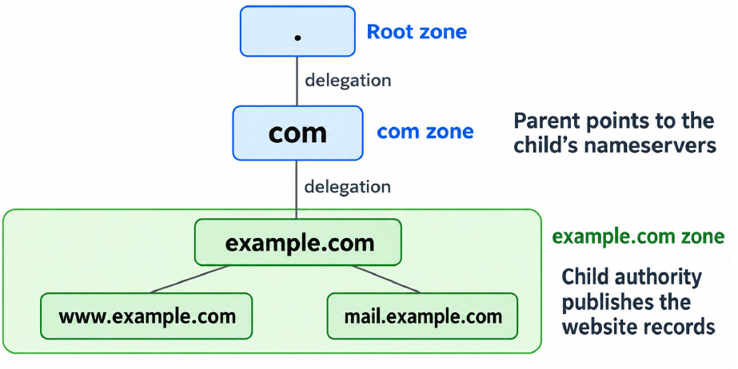
Why can nobody else publish records for example.com? The
registrar account decides which
nameservers answer. The DNS hosting account edits the
records on those nameservers. Anyone can run a server
that claims to know example.com, but normal
lookups never reach it, because resolvers follow the .com
zone, and the .com zone points only to the nameservers the
owner chose. Authority comes from delegation.
In a DNS editor, the host @ means
example.com itself, and the host www means
www.example.com.
5.4 Following a lookup
The lecture’s example is a cold cache (nothing stored), with no alias and no retry, and the nameserver addresses are known.
- The device sends a recursive request to its resolver: “get me the answer.”
- The resolver does the work iteratively: it follows the referrals itself. Every referral comes back to the resolver, and the resolver sends the next query.
| Step | Who asks whom | What comes back |
|---|---|---|
| 1 | Device asks resolver: www.example.com A? |
|
| 2, 3 | Resolver asks a root server | Referral: ask the .com servers |
| 4, 5 | Resolver asks a .com server | Referral: ask example.com’s nameservers |
| 6, 7 | Resolver asks example.com’s
authoritative server |
203.0.113.10, TTL 300 s |
| 8 | Resolver answers the device | 203.0.113.10. The resolver keeps a
copy. |
Caching is local work at the resolver, not another DNS message. The address is now known. The web page comes later, over HTTP.
Real dig output. dig is a DNS query
tool, and @server picks the server to ask. These captures
are historical, not current NTU infrastructure. The lookup is
www.ntu.edu.sg A.
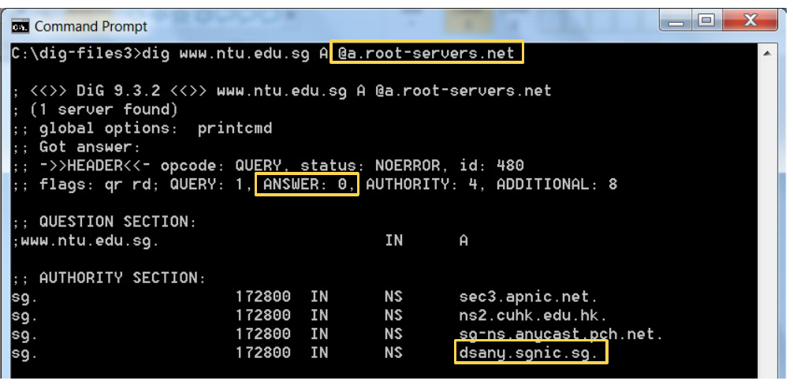
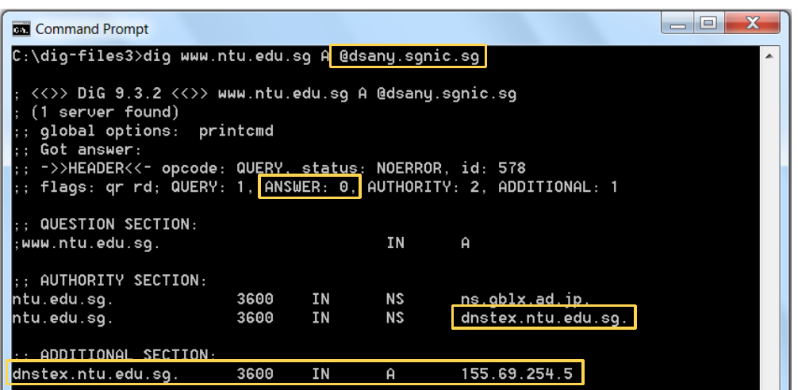
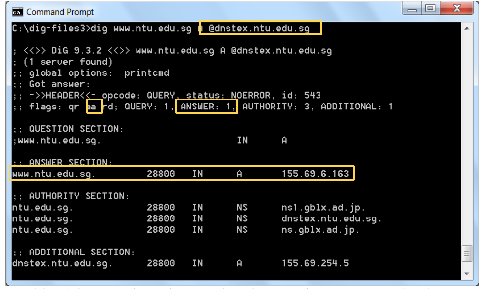
How to read a dig reply:
| Field | Meaning |
|---|---|
ANSWER: 0 plus NS records in AUTHORITY |
A referral. Ask the server named there. A DNS reply can succeed without giving the final address. |
| ADDITIONAL, an A record | The address of the nameserver just named. It saves one more lookup. |
ANSWER: 1 and the flag aa |
The final answer, from the authoritative server. |
A number before IN A or IN NS |
The record’s TTL in seconds |
The root server replies with the website’s IP address.
False. The root server replies with a referral (the NS records of the TLD servers). Only the authoritative server for the name gives the final address.
Extension 5.1. A resolver with an empty
cache looks up www.example.com for one device. How
many DNS messages are sent in total? Then the device looks up
mail.example.com right afterwards. Which messages can the
resolver skip?
Answer (Extension 5.1)
Steps 1 to 8 are 8 messages: the device’s query (1),
three query-and-reply pairs to root, .com and the authority
(2 to 7, which is 6 messages), and the answer to the device (8).
A resolver does not cache mail.example.com’s
address yet. A real resolver also caches the
referrals it received (the NS records of .com and
example.com, each with its own TTL). It can then ask the
authority directly and skip steps 2 to 5, so it needs 4 messages (device
query, resolver query, authority reply, answer). This caching of
referrals is standard behaviour, not in the lecture.
The lecture shows only the cold-cache case.
5.5 Caching and TTL: why a change takes time
A DNS cache keeps records from earlier replies. While a record is usable, the resolver answers from its copy and does not ask the root, the TLD or the authority again. That means less work and less delay.
An update at the authority does not replace the copies already stored. The old copy stays valid until its TTL runs out.
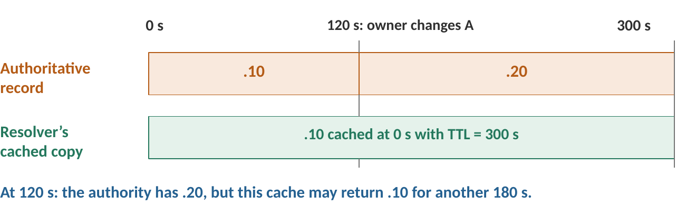
Short TTL: changes reach visitors sooner, but the authority gets more lookups. Long TTL: fewer lookups, but changes take longer to appear.
Example Question (lecture): moving a website to a new address.
| Time | Event |
|---|---|
| 10:00 | The resolver caches 203.0.113.10 with TTL = 600 s. |
| 10:02 | The administrator changes the authoritative A record to 203.0.113.20. |
| 10:05 | A client asks the same resolver for
www.example.com. |
- Which address may the resolver return at 10:05? (b) When does its original cached record expire? (c) Why might another visitor get the new address sooner? Assume ordinary TTL-based caching, no forced refresh and no serve-stale extension.
Answer
203.0.113.10, the old address. The copy was stored at 10:00 and is good until 10:10. At 10:05 it has 600 − 300 = 300 s left. The change at 10:02 does not reach this cache.
At 10:10: 10:00 plus 600 s.
Another resolver has its own cache. If it holds no old copy, or its old copy expired, it asks the authority and gets 203.0.113.20. The same name can have different cached answers in different places for a while.
General method: which address does a cache return at time ?
- Find the time the record was cached, , and its TTL.
- Expiry = + TTL. Remaining TTL at time = expiry − .
- If is before expiry: the cache returns the old record, whatever the authority holds now. After expiry: it asks again and gets the current record.
- The longest a change can stay hidden from a cache is the TTL it holds (it cached the old record just before the change).
- Different resolvers cached at different times, so they expire at different times.
Planning an address change. The lecture gives this order:
| When | What to do |
|---|---|
| Before the move | Lower the TTL if needed. Wait for the old, longer TTL to run out first, so no cache still holds a long lifetime. |
| During the move | Publish the new address. Keep the old server running for a suitable overlap, because visitors with an old cached answer still arrive there. |
| After | Check both views: what the authority publishes and what a resolver currently returns. They can differ for a while. |
A DNS change does not move a connection that is already established to a different server.
Extension 5.2. The site’s A record has TTL = 3600 s. The owner wants to move it to a new server at 12:00 with at most 60 s of mixed answers. When must the owner lower the TTL to 60 s, and when can the old server be switched off?
Answer (Extension 5.2)
A cache can hold the 3600 s record until one hour after it fetched it. So lower the TTL at least 3600 s (1 hour) before the move: at or before 11:00. By 12:00, every cache holds either the 60 s version or nothing.
At 12:00 publish the new address. The longest any cache can still return the old address is now 60 s. Keep the old server up for at least those 60 s (the lecture says “a suitable overlap”), then switch it off. Established connections are not affected by DNS.
After the owner changes the A record, every visitor reaches the new server at once.
False. Resolvers that cached the old record keep returning it until its TTL runs out. Visitors reach the new or the old server depending on their resolver’s cache.
5.6 DNS messages travel in UDP or TCP
Conventional DNS uses server port 53. A DNS query is application data inside UDP or TCP.
| Transport | Use |
|---|---|
| UDP 53 | Common. One small query, one small reply. |
| TCP 53 | When a UDP reply is marked truncated (too big), the client asks again over TCP and gets the complete answer. |
| DNS over TLS or HTTPS | Protects the exchange between the client and its chosen resolver. |
6. A Complete Web Request
DNS gives an address. This section joins everything from Chapters 5 to 10 for one page: ARP finds the local next hop, DNS supplies the server’s address, TCP sets up the connection, HTTP asks for the page. Keep the MAC and IP addresses apart at every step.
6.1 The first request, frame by frame
Example Question (lecture): the first request for a web
page. A laptop opens http://www.example.com/. The
DNS answer will be 198.51.100.80. The laptop is 192.168.40.10/24 (MAC
L). The gateway, which is also the DNS resolver, is 192.168.40.1 (MAC
G). The web server is 198.51.100.80. Which frames does the laptop
exchange before the first page content arrives? Assume /24, empty ARP
and DNS caches, no TCP connection, working routing and NAT, UDP DNS,
plain HTTP, no loss and no proxy. Watch the laptop’s LAN frames: before
outbound NAT and after inbound NAT.
Answer
| # | Frame and purpose | MAC: from → to | IP: from → to |
|---|---|---|---|
| 1 | ARP request: who has 192.168.40.1? | L → broadcast | no IP header |
| 2 | ARP reply: .1 is at G | G → L | no IP header |
| 3 | DNS query: www.example.com A |
L → G | 192.168.40.10 → 192.168.40.1 |
| 4 | DNS answer: 198.51.100.80 | G → L | 192.168.40.1 → 192.168.40.10 |
| 5 | TCP SYN to port 80 | L → G | 192.168.40.10 → 198.51.100.80 |
| 6 | TCP SYN+ACK | G → L | 198.51.100.80 → 192.168.40.10 |
| 7 | TCP ACK | L → G | 192.168.40.10 → 198.51.100.80 |
| 8 | HTTP GET, carried by TCP | L → G | 192.168.40.10 → 198.51.100.80 |
| 9 | First response content | G → L | 198.51.100.80 → 192.168.40.10 |
- Frames 1 to 4: the resolver is local, so ARP supplies its MAC first. DNS then supplies the web server’s IP address.
- Frames 5 to 9: the IP destination is the remote web server, but the Ethernet destination is the local gateway, because the server is outside the /24. MAC G is already cached (from frame 2). DNS did not give the laptop the server’s MAC.
- This is one teaching trace. An ACK and data may combine, and a request or response may span several segments.
General method: list the frames of a web request
- DNS server on my subnet? (Compare it with my address and mask.) Yes: ARP for the DNS server. No: ARP for the default gateway. If the ARP cache already has that MAC, skip ARP. Two frames: request (broadcast) and reply.
- DNS query and reply (UDP 53). Skip both if the DNS cache already has the name. The reply gives the web server’s IP address.
- Is the web server on my subnet? Almost always no. Every frame to it has Ethernet destination = gateway MAC and IP destination = server. (The gateway is already in the ARP cache from step 1, or needs its own ARP.)
- TCP handshake: SYN, SYN+ACK, ACK (3 frames).
- HTTP: GET, then the first reply with page content (2 frames).
- Count only the frames the laptop sends or receives. Frames beyond the gateway are not on its LAN.
- With nothing cached and everything on the first LAN, the total is 4 + 3 + 2 = 9 frames.
6.2 What if the resolver is outside the subnet?
Variation (lecture). Change only the DNS resolver: it is now 203.0.113.53, outside the laptop’s /24. Which address does the laptop ARP for?
Answer
The laptop ARPs for 192.168.40.1, the local gateway. The DNS query’s IP destination stays 203.0.113.53, and its first Ethernet destination is MAC G. ARP resolves the local next hop only. The laptop never ARPs for a DNS resolver that is beyond its subnet. Everything after that works as in the table above.
6.3 Tutorial 2.3 Q3b
Tutorial 2.3 Q3. (Question 3 and the ipconfig output are in Chapter 5, Section 9. The figure gives the computer 192.168.1.68 with MAC 00-23-26-AA-AA-AA, the ADSL modem 192.168.1.254 with MAC 00-24-17-BB-BB-BB, and the web server 155.69.6.163.)
- The user launches his web browser and requests for the default web page at http://www.ntu.edu.sg without the use of web proxy. Assume that all the caches of the computer are initially empty. Using a table similar to Table Q3, list the sequence of frames being sent and received by the computer until the first frame containing the requested web page is received.
Answer (b), unofficial: no solution was released
The computer’s address and mask are 192.168.1.68 and 255.255.255.0. The modem is the default gateway and the DNS server (both 192.168.1.254), and it is on the same subnet. So one ARP for the modem serves both DNS and the web server. The web server (155.69.6.163) is not on the subnet.
| Frame | MAC source | MAC destination | IP source | IP destination | Purpose of frame |
|---|---|---|---|---|---|
| 1 | 00-23-26-AA-AA-AA | FF-FF-FF-FF-FF-FF | (ARP) | (ARP) | ARP request: who has 192.168.1.254? |
| 2 | 00-24-17-BB-BB-BB | 00-23-26-AA-AA-AA | (ARP) | (ARP) | ARP reply: 192.168.1.254 is at 00-24-17-BB-BB-BB |
| 3 | 00-23-26-AA-AA-AA | 00-24-17-BB-BB-BB | 192.168.1.68 | 192.168.1.254 | DNS query: www.ntu.edu.sg A |
| 4 | 00-24-17-BB-BB-BB | 00-23-26-AA-AA-AA | 192.168.1.254 | 192.168.1.68 | DNS reply: 155.69.6.163 |
| 5 | 00-23-26-AA-AA-AA | 00-24-17-BB-BB-BB | 192.168.1.68 | 155.69.6.163 | TCP SYN, port 80 |
| 6 | 00-24-17-BB-BB-BB | 00-23-26-AA-AA-AA | 155.69.6.163 | 192.168.1.68 | TCP SYN+ACK |
| 7 | 00-23-26-AA-AA-AA | 00-24-17-BB-BB-BB | 192.168.1.68 | 155.69.6.163 | TCP ACK |
| 8 | 00-23-26-AA-AA-AA | 00-24-17-BB-BB-BB | 192.168.1.68 | 155.69.6.163 | HTTP GET request for the default page |
| Last (9) | 00-24-17-BB-BB-BB | 00-23-26-AA-AA-AA | 155.69.6.163 | 192.168.1.68 | HTTP reply: the first frame with the web page |
- An ARP message has no IP header. Some posted answers put the ARP sender’s and target’s IP addresses in these columns (AY15/16 S2 Q4c does). Either is fine if you say which you mean.
- The frames show the computer’s LAN side. The modem does NAT: it changes the private source 192.168.1.68 to its public address on the way out, and back on the way in. The computer sees only its own private address.
- The modem also answers the DNS query itself or asks the ISP’s DNS server. The computer does not see that exchange.
- Frames 5 to 9 have the server’s IP but the modem’s MAC: the server is off the subnet, so the next hop is the gateway.
General method: same table when something is already cached
Start from the nine frames and cross out what the caches already hold.
| Already cached | Frames that disappear |
|---|---|
| The modem’s MAC (ARP cache) | 1 and 2 |
www.ntu.edu.sg (DNS cache) |
3 and 4. ARP (1 and 2) stays, because the laptop still needs the gateway’s MAC for frame 5. |
| An open TCP connection | 5, 6 and 7 |
| Both ARP and DNS | 1 to 4. Five frames remain: 5 to 9. |
Extension 6.1. In Tutorial 2.3 Q3b, the ARP cache already holds the modem’s MAC, but the DNS cache is empty. How many frames does the computer send and receive until the first page frame arrives? Name the first and the last.
Answer (Extension 6.1)
Frames 1 and 2 (ARP) disappear. The computer sends the DNS query first, so frames 3 to 9 remain: 7 frames. The first is the DNS query. The last is the HTTP reply. ✓ (9 − 2 = 7)
Extension 6.2. The same page is now
https://www.ntu.edu.sg (port 443). Between the TCP ACK and
the first page frame, what new frames appear? How is the count of 9
affected?
Answer (Extension 6.2)
The browser and server must run the TLS handshake first (agree keys, check the server’s identity). TLS 1.3 needs about 1 RTT (Live Lecture 4.5), so a few more frames appear between frame 7 and the GET. They are encrypted from then on, so the GET and the reply are TLS data, not readable HTTP. The destination port is 443. The exact number of TLS frames is not in the lecture, so a question must give it. The frames before frame 5 do not change.
6.4 Is it DNS? Test the name and the address separately
A website will not load. What does each test establish?
| What you try | What happens | What it suggests |
|---|---|---|
Open http://www.example.com/ |
Name-resolution error | Check DNS. The browser’s wording alone is not a full diagnosis. |
ping 203.0.113.10 |
Replies arrive | The IP address is reachable for ICMP. The HTTP service is still untested. |
nslookup www.example.com |
DNS request timed out | No DNS reply before the timer. Check the resolver and the path to it. |
nslookup www.example.com |
Non-existent domain | The resolver says no such name. Check spelling and the DNS setup. |
| Compare DNS answers | Old address returned | A usable cached copy, or outdated authoritative data |
Name fails, but a ping to the address works? Suspect DNS first. A ping reply does not prove the website works.
The ping to the server’s IP address succeeds, so the website is working.
False. A ping tests IP reachability only (ICMP). The web server program, its port 80 or 443, and HTTP could all be broken.
Exam patterns
Where each pattern appeared: the frame-trace table came in
Tutorial 2.3 Q3b, AY15/16 S2 Q4c (ARP,
DNS, then a ping to www.ntu.edu.sg, with the DNS server and
the target both outside the subnet), and AY19/20 S1 Q4c
(ARP, DNS, ARP again, ping). AY25/26 S2 Q1(13) (the
newest paper) had one multiple-choice statement, “DNS resolves IP
address to MAC”. I found no HTTP, caching, cookie or TTL question in the
posted solutions (AY15/16 to AY23/24) or in the two newest papers,
AY24/25 S2 and AY25/26 S2 (read in full). Those patterns come from the
lecture’s own examples. The lecture is new this
semester, so expect its examples to be tested.
| Question type | How to attack it | Trap |
|---|---|---|
| Frame table: ARP, DNS, TCP, HTTP (or ping) | Gateway or DNS on subnet? ARP. DNS. SYN, SYN+ACK, ACK. GET. Reply. Skip what is cached. | Putting the server’s MAC in the table. Ethernet destination = next hop (gateway), IP destination = server. |
| Status code or timeout | A code is an HTTP answer. A timeout has no answer. | Calling a timeout a 404. Treating POST as a fix. |
| Page delay in RTT | Persistent: . Non-persistent: . The HTML comes first. | Counting 1 RTT for setup of each object under persistent HTTP. Forgetting the HTML object. |
| Cache decision | Fresh? Nothing. Stale? Conditional GET: 304 (no body) or 200. | Saying every stale copy needs a full download |
| Cookie and session | Cookie = identifier in the browser. Session = data on the server. | Mixing cookies with persistent connections |
| DNS lookup steps | Device, resolver, root, TLD, authority, back to the resolver. The resolver keeps a copy. | Saying the device contacts the root. Saying the root gives the address. |
| TTL after a change | Expiry = cached time + TTL. Before expiry: old address. | Using the change time instead of the caching time |
| Which role does DNS play | Name to IP. ARP: IP to MAC. DHCP: gives a host its settings. | Saying DNS finds MAC addresses |
| HTTP/2 against HTTP/3 | One TCP stream: a gap blocks all. QUIC streams: only the stream with the loss. | Saying HTTP/2 streams are independent in loss |
Common Traps
- TCP delivery is not the application’s result. An ACK means “bytes received”, not “file saved”. The application sends its own reply.
- TCP has no message boundaries. The application marks them (length, fixed size, delimiter).
- A status code is an HTTP answer. A timeout is no answer. 404 means the server replied. A timeout proves only that nothing came back in time.
- Neither GET nor POST encrypts. Only HTTPS (HTTP over TLS) does.
- DNS resolves only the hostname. The path and query go to the web server.
- Persistent connection and cookie are different tools. One reuses TCP. The other recognises the user.
- Under persistent HTTP the TCP setup happens once. The count is RTT, not . The lecture’s model ignores DNS and TLS.
- A cache hit is not always a request. A fresh copy needs no request. A stale copy needs a conditional GET, and a 304 sends no body.
- Stale does not mean changed. It means “check before reuse”.
- The device asks only its resolver. The resolver asks the root, the TLD and the authority. Each referral comes back to the resolver.
- Root and TLD servers give referrals, not addresses.
ANSWER: 0with NS records is a referral. Theaaflag marks the authoritative answer. - A nameserver’s address is not the website’s address. The ADDITIONAL A record in a referral belongs to a nameserver.
- Registering a domain does not create a website or an A record. Delegate, then publish.
- A DNS change takes up to one TTL, counted from when each cache stored the old record. Keep the old server up during the overlap.
- A CNAME is not an HTTP redirect. A CNAME is followed inside DNS. A redirect makes the browser ask a new URL.
- DNS does not find MAC addresses. ARP does, and only on the local link.
- In a frame table, MAC and IP differ. The IP destination is the final host. The Ethernet destination is the next hop. DNS does not give the server’s MAC.
- A ping reply proves only IP reachability. It does not prove HTTP works.
- HTTP/2 shares one TCP byte stream, so one loss blocks every stream. HTTP/3 over QUIC blocks only the stream that lost data. QUIC, CUBIC and BBR are background, not tested.